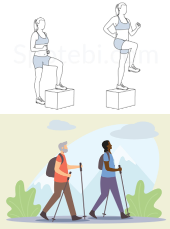
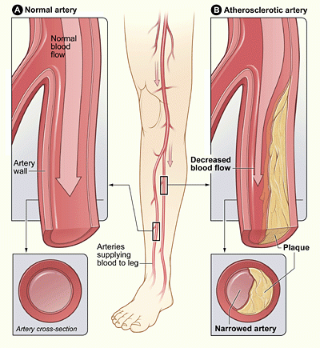

Welcome! Check all types of P.A.D needs.
Reccomendations:

Making long-lasting lifestyle changes is often a successful treatment for PAD.
-Correct any high blood pressure, cholesterol. and blood glucose levels.
-Follow a healthy eating plan.
-Be more physically active.
Reccomended Exercises:
Step-Ups:
A basic exercise to begin for a warm up, works with the muscles of the legs. It can increase the strength of the hamstrings and quadriceps..
Walking:
Begin with a walk and each day gradually increase to a jog. This will lower your cholesterol, as well as your blood pressure.
Details About P.A.D:
Peripheral arterial disease, PAD, occurs when extra cholesterol and other fats in the blood, build up in the walls of the arteries that supply blood to your limbs.
If PAD is getting severe some of the options that pediatricians recommend to treat it are medication like statins or an angioplasty surgery
Need Help? Drop a note!